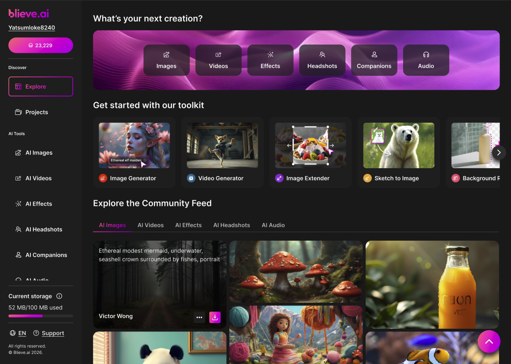
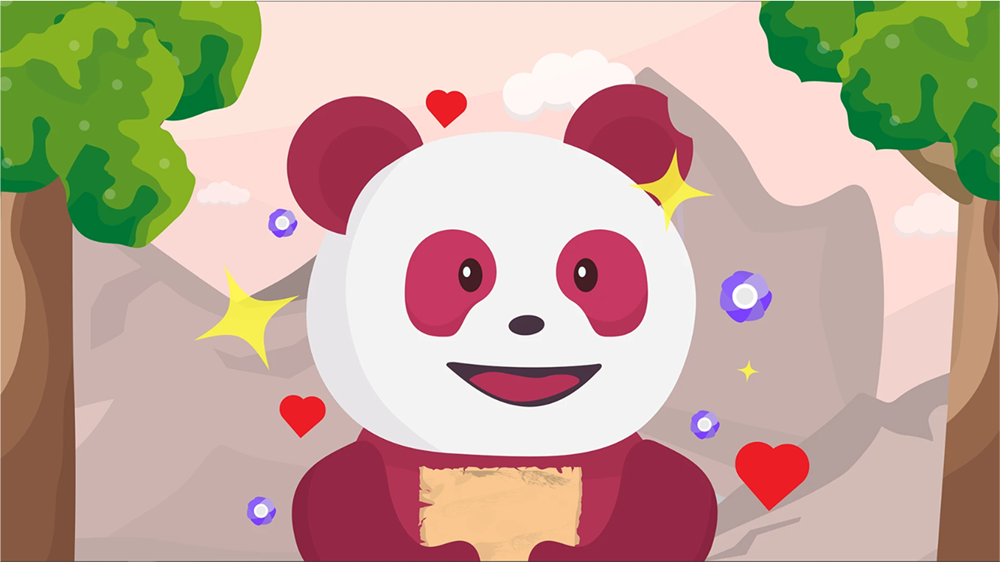
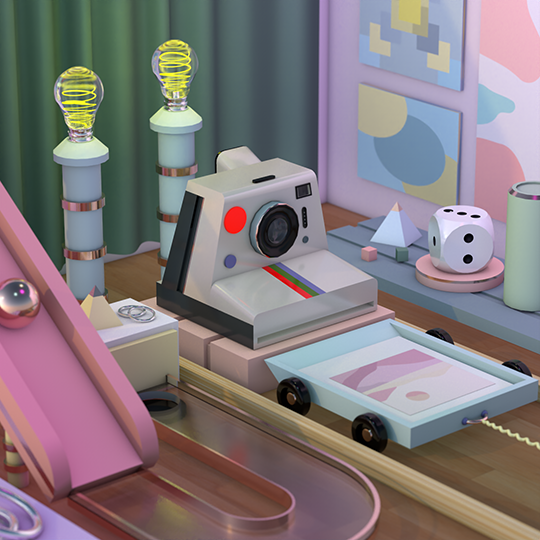
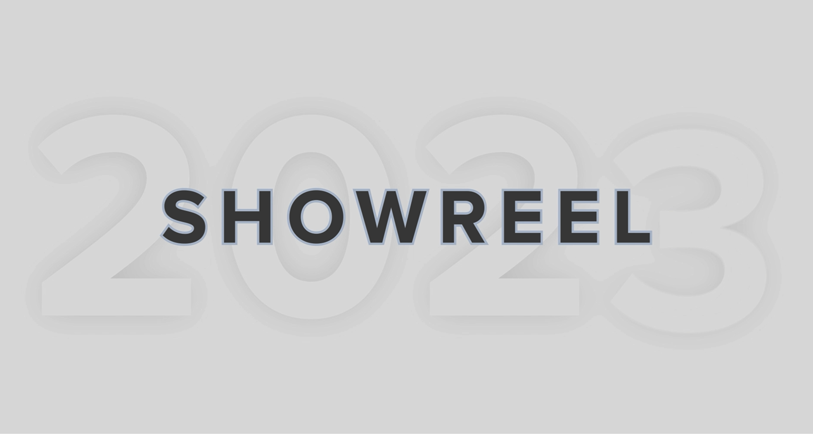
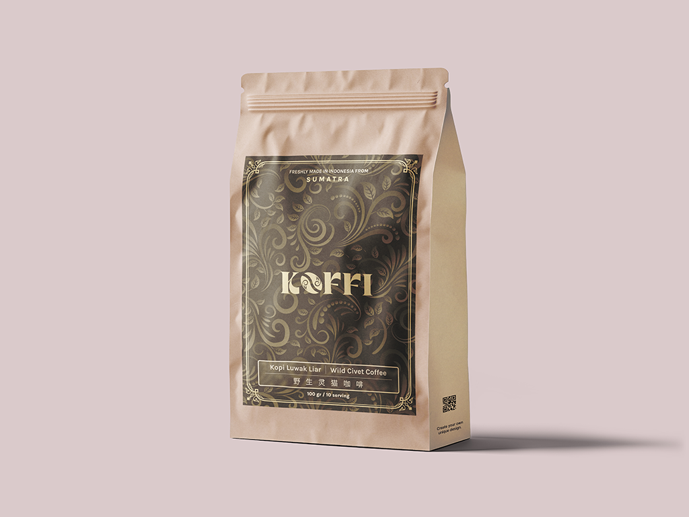
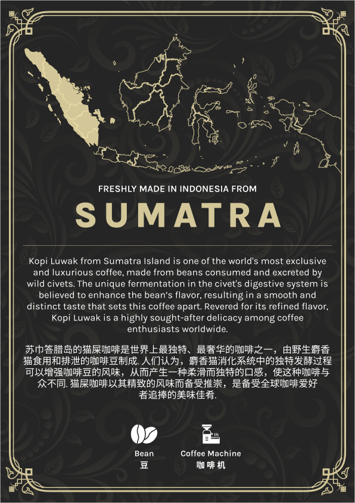
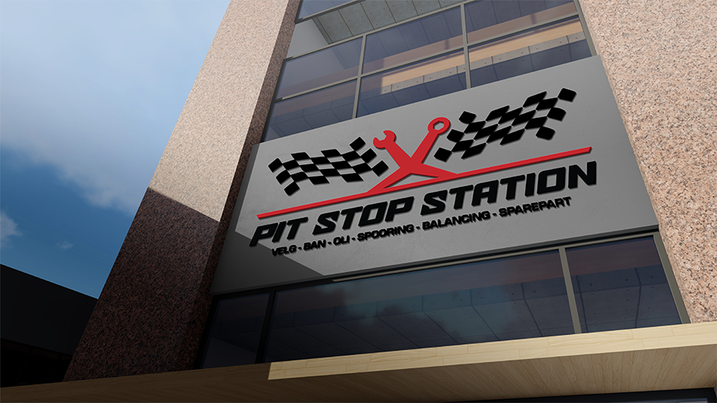
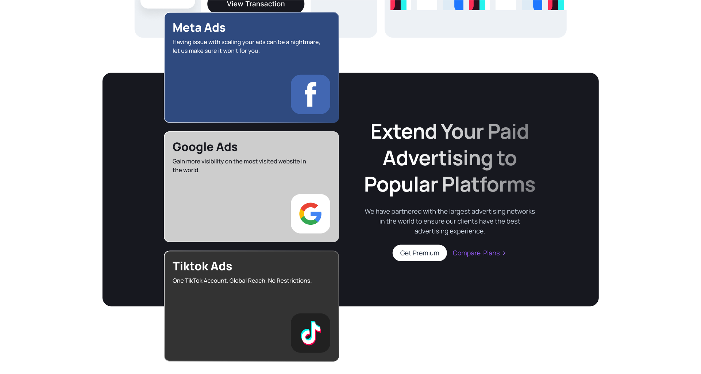
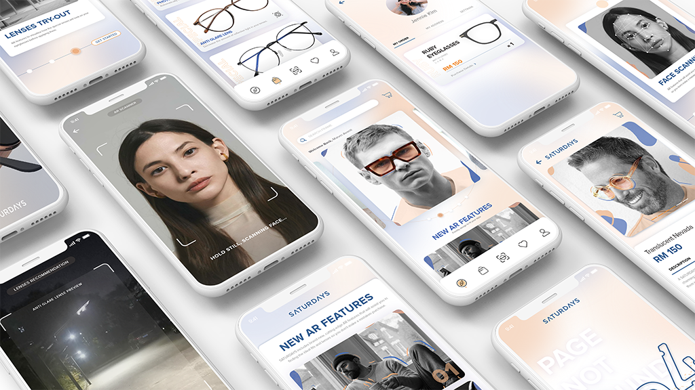

Blieve.ai — A single home for eleven AI tools
Blieve.ai is an all-in-one AI platform where users can generate images, turn them into videos, and edit everything in one place. Built for creators and marketers who want fast output without jumping between tools.
Background
Blieve.ai is an all-in-one AI platform that combines multiple tools into a single experience. Users can generate images, turn them into videos, and edit everything in one place.
The goal is simple: reduce the need to jump between different tools and make content creation faster.
Problem
Even with AI, the workflow is still fragmented.
Users often:
- Generate images in one tool
- Edit in another
- Then switch again for video
This creates unnecessary steps, slows everything down, and increases friction, especially for non-designers.
Solution
Instead of building separate tools, I focused on creating one connected flow.
Users can:
- Start with a prompt
- Generate content
- Refine and edit
- Convert to video
- Export
All in a single workflow without leaving the platform.
Discovery
I looked at how existing AI tools are being used.
Most platforms are:
- Feature-heavy but disconnected
- Powerful but not beginner-friendly
- Focused on output, not workflow
The biggest gap wasn't capability, it was how everything connects together.
Research
Focused on understanding user behavior:
- Users don't think in "tools", they think in outcomes
- Most users just want to go from idea → final output quickly
- Too many options early creates confusion
Key insight: simplicity in structure matters more than adding more features.
Exploration
Explored multiple directions before finalizing the structure:
- Tool-based layout vs flow-based layout
- Sidebar navigation vs top navigation
- Split preview vs single canvas
Tested different ways to reduce decision-making and make the experience feel more guided.
Tool-based layout
Flow-based layout
Decision: Chose flow-based for a guided experience.
Sidebar navigation
Top navigation
Decision: Chose sidebar for clarity.
Split preview
Single canvas
Decision: Chose single canvas for focus.
Final direction: flow-based experience with minimal friction.
Design
The final design focuses on clarity and speed.
- Prompt-first interaction (start simple)
- Central canvas for output
- Side panel for controls
- Progressive disclosure for advanced settings
Everything is designed to reduce steps and keep users focused on creating.











Takeaway
Designing AI tools is not about adding more features, but reducing decisions.
For Blieve.ai, the focus was turning multiple tools into one clear flow.
Less thinking, more creating.